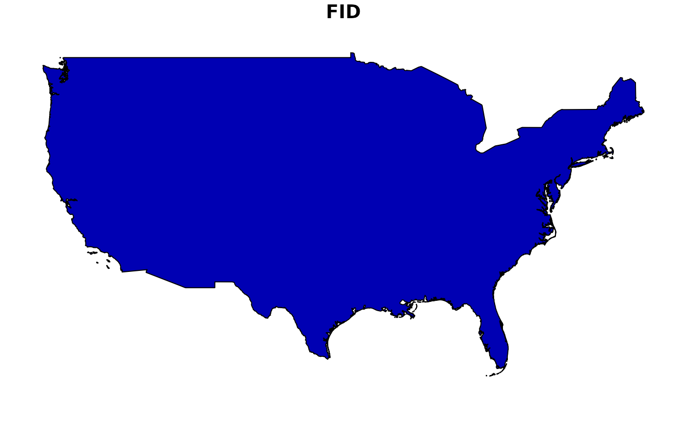

This function uses the sf package to read one of the included shapefiles bundled with the package. Jessie has standardized these.
Usage
read_shp(shape = c("usa", "eez", "contshelf50", "contshelf200", "mpas"))Source
The shapefiles are stored in /extdata.
Available shapefiles:
usa:
usa_contiguous.shpeez:
westcoast_eez.shp. Derived from 'Marine Regions' dataset: https://www.marineregions.org/contshelf50:
cont_shelf_50m.shp. Derived from GEBCO 2024contshelf200:
cont_shelf_200m.shp. Derived from GEBCO 2024.mpas:
california_mpas.shp. From CDFW dataset: 'California Marine Protected Areas ds582', representing all MPAs as of 1 Jan, 2019.
Examples
shp <- read_shp("usa")
shp
#> Simple feature collection with 1 feature and 1 field
#> Geometry type: MULTIPOLYGON
#> Dimension: XY
#> Bounding box: xmin: -124.7346 ymin: 24.54255 xmax: -66.97732 ymax: 49.36949
#> Geodetic CRS: WGS 84
#> FID geometry
#> 1 0 MULTIPOLYGON (((-122.7411 4...
plot(shp)
